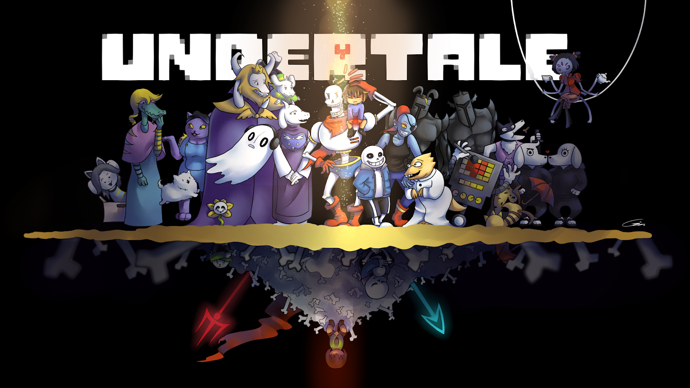

DESARROLLO DE VIDEOJUEGOS
Descubra todo el proceso de desarrollar videojuegos indies y triple A
Juegos Indies
Los juegos Indies o tambien conocidos como juegos independientes, como fue mencionado anteriormente, son desarrollados por una persona o por un grupo pequeño de personas, presentare entrevistas o el proceso detras explicado de algunos de estos juegos, que algunos se encuentran en ingles pero es lo mejor para aprender de estos...
-

Undertale
Undertale es un juego RPG, desarrollado por toby fox y temmie-chang como artista, en la que nos hayamos en el subsuelo, donde nos encontraremos con monstruos y podremos tomar la decision de salvarlos o eliminarlos, con una mecanica para evitar ataques basada en touhou y un sistema de exploracion basado en earthound.
En el siguiente articulo, nos mostraran todo lo que abarco la creacion de este juego, con parte de la biografia de toby fox, junto a un link de steam para comprar el juego si es de su interés
Descubre más Comprar juego -

Terraria
Terraria, juego sandbox desarrollado por el equipo de Re-Logic, lanzado en el 2011, este, siguiendo por completo su eslogan de: ¡Cava, lucha, explora, construye!, te lleva a un mundo repleto de peligros, aventuras, jefes y muchas armas, teniendo elementos de rpg como clases de rango, mago, melee e invocador, y elementos de construccion para desatar tu creatividad.
Aqui presento unos enlaces que llevan a una entrevista con el creador de terraria, para saber un poco como llego a crear este juego, y del otro lado, donde comprarlo, por si nuevamente quisieras comprarlo
Descubre más Comprar juego -
Bug Fables The Everlasting Sapling
Decidi presentar este dado que fue desarrollado por un equipo independiente panameño conocido como Moonsprout games, aun sin haberlo jugado siempre me parece importante destacar talento nacional, siendo lanzado en 2019, tratandose tambien de un juego de estrategia RPG, donde tomaremos el lugar de unos bichos que exploran Bugaria, basado en el estilo de paper mario, este juego asegura ser divertido aunque poco conocido.
Aqui presentare nuevamente una entrevista a los creadores detras del juego y un enlace para comprar el juego
Descubre más Comprar juego